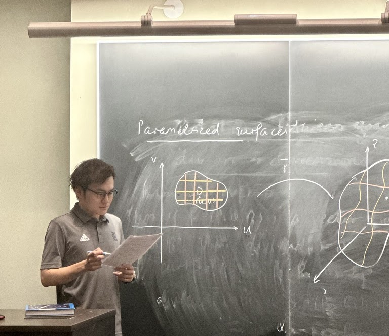
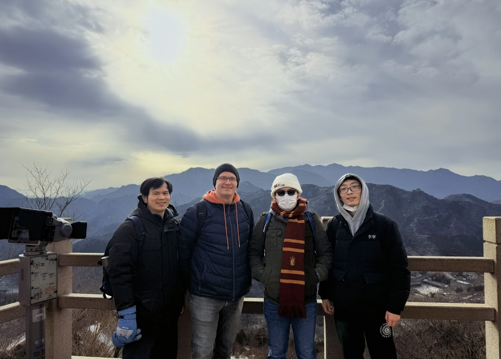
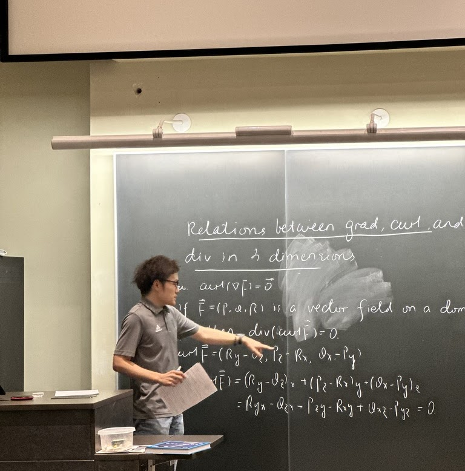
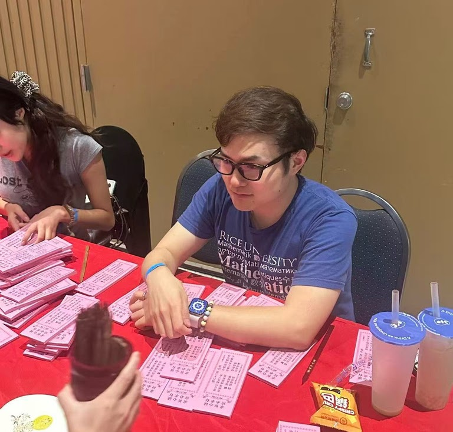

01
GEOMETRY · GROUPS · TOPOLOGY
Zihao Liu.刘子昊
Mathematics Ph.D. candidate
at Rice University
I study geometric group theory and low-dimensional topology, with a particular interest in profinite methods and rigidity.

A LITTLE ABOUT ME
Curious about the
shape of groups.
I am a fifth-year Ph.D. candidate in the Department of Mathematics at Rice University, where I work with Alan Reid.
Before coming to Rice, I earned an M.S. in mathematics at Brandeis University in 2021, advised by Kiyoshi Igusa, and a B.S. in mathematics and applied mathematics at Jilin University in 2019, advised by Xiankun Du.
More about my researchSELECTED WORK
Research
02
Scaled homology and topological entropy
Read the paperRECENT PRESENTATIONS
Talks & seminars
November 2026
Finite quotients of right-angled Artin groups
Michigan State Topology Seminar
September 2026
Finite quotients of right-angled Artin groups
Rutgers Geometry & Topology Seminar
June 2026
Introduction to Veech groups: genus two, Teichmüller curves, and symplectic images
Beijing International Center for Mathematical Research Topology Seminar
BEYOND THE BLACKBOARD
Mathematics is
better together.
A few moments from conferences, travels, and time with friends.
Visit the photo gallery
THE GREAT WALL ↗More moments
View all photos
